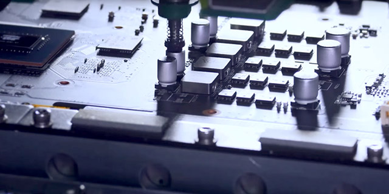
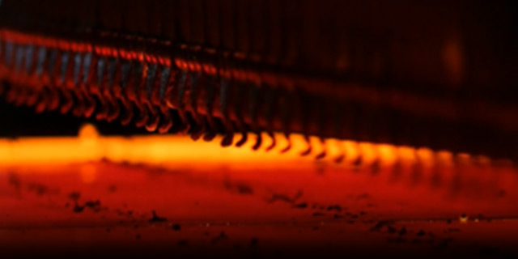
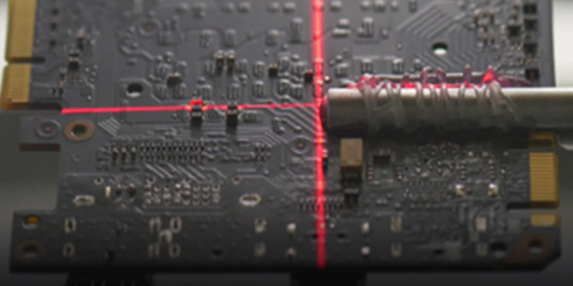
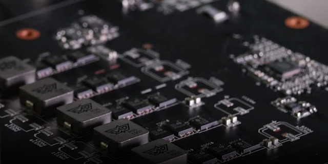
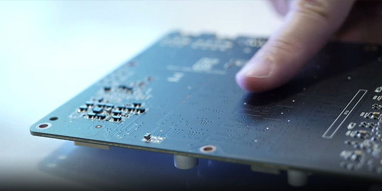
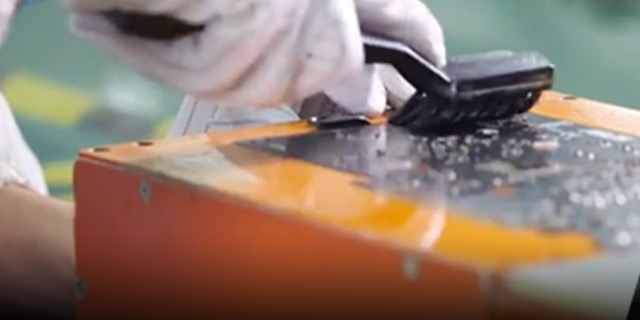

ROG Strix GeForce RTX 2070 grafičke kartice koriste najkvalitetnije primerke (A-List) NVIDIA GPU čipova i iskustvo elitnih ROG inženjera, kako bi obezbedile potrebne performanse i stabilnost za savršenu gaming akciju. Izvanredna naponska sekcija obezbeđuje dovoljno snage za pomeranje ovrkloking granica, dok perfektni rashladni sistem čini da performanse Turing čipa uvek budu upečatljive. Korisniku je na raspolaganju čitav arsenal alata koji omogućava dodatnu optimizaciju i fino podešavanje ovog ekstremnog hardvera.
ROG Strix GeForce RTX 2070 grafičke kartice koriste najkvalitetnije primerke (A-List) NVIDIA GPU čipova i iskustvo elitnih ROG inženjera, kako bi obezbedile potrebne performanse i stabilnost za savršenu gaming akciju. Izvanredna naponska sekcija obezbeđuje dovoljno snage za pomeranje ovrkloking granica, dok perfektni rashladni sistem čini da performanse Turing čipa uvek budu upečatljive. Korisniku je na raspolaganju čitav arsenal alata koji omogućava dodatnu optimizaciju i fino podešavanje ovog ekstremnog hardvera.
Sve ROG Strix grafičke kartice se proizvode pomoću Auto-Extreme tehnologije – potpuno automatizovanog procesa proizvodnje koji postavlja nove standarde u industriji. Tradicionalno, lemljenje komponenti koje prolaze kroz štampanu ploču ili se montiraju direktno na njenu površinu treba da se obavlja u više faza. Za razliku od tradicionalnog načina lemljenja, Auto-Extreme tehnologija omogućava da se kompletan proces lemljenja obavi kroz samo jednu fazu, čime se smanjuje negativan uticaj toplote na komponente i eliminiše potreba za čišćenjem štetnim hemikalijama. Krajnji rezultat su smanjeni uticaj na okruženje, manja potrošnja energije tokom procesa proizvodnje i pouzdaniji proizvod.
Potpuno automatizovan proizvodni proces, bez mogućnosti greške
Ojačane komponente nude bolju stabilnost prilikom overklokovanja
Automatizacija omogućava bolju i precizniju kontrolu kvaliteta
Lemljenje se obavlja u samo jednoj etapi
ASUS štampane ploče su glatke, tako da se nećete poseći prilikom ugradnje kartice
Proizvodnja bez upotrebe fluksa je promena koja doprinosi očuvanju životne sredine
ROG inženjeri su uspeli trostruko da ojačaju strukturu ROG Strix GeForce RTX 2070 grafičke kartice, implementacijom metalnog rama koji sprečava prekomerno uvijanje i savijanje štampane ploče.
ROG inženjeri su uspeli trostruko da ojačaju strukturu ROG Strix GeForce RTX 2070 grafičke kartice, implementacijom metalnog rama koji sprečava prekomerno uvijanje i savijanje štampane ploče.
ASUS GPU Tweak II je softverski alat koji fino podešavanje parametara podiže na sasvim novi nivo. GPU Tweak II korisniku omogućava jednostavno podešavanje kritičnih parametara, uključujući radnu frekvenciju GPU-a, radnu frekvenciju video memorije, vrednost napona i slično. Takođe, omogućen je i monitoring svih parametara u realnom vremenu, putem prilagodljivog on-screen displeja. Tu su i napredne opcije za kontrolu ventilatora, kao i niz drugih opcija koje će ti pomoći da iz svoje grafičke kartice izvučeš maksimalne performanse.
XSplit je softver koji gejmerima omogućava da iskuse premijum striming, uz in-game anotacije i druge napredne funkcije. Kupovinom ROG Strix GeForce RTX 2070 OC Edition grafičke kartice besplatno dobijaš licencu za XSplit Gamecaster softver. Vidimo se online! 😉
XSplit je softver koji gejmerima omogućava da iskuse premijum striming, uz in-game anotacije i druge napredne funkcije. Kupovinom ROG Strix GeForce RTX 2070 OC Edition grafičke kartice besplatno dobijaš licencu za XSplit Gamecaster softver. Vidimo se online! 😉
ROG Strix GeForce RTX 2070 grafička kartica poseduje Aura RGB osvetljenje, kako na prednjem/gornjem poklopcu tako i na poleđini. Preuzmi Aura Sync softver, poveži druge kompatibilne uređaje i podesi osvetljenje tvog gejming setup-a onako kako želiš. Svetlosne efekte možeš sinhronizovati sa muzikom, podesiti ih tako da se menjaju u zavisnosti od temperature sistema ili da aktiviraš jedan od mnogobrojnih efekata. Ako ti se sviđa sve ovo, potraži Aura Sync logo kada biraš komponente za svoju novu gejming mašinu.
ROG Strix GeForce RTX 2070 grafička kartica opremljena je NVIDIA G-SYNC tehnologijom koja obezbeđuje najtečniji i najbrži gejming koji se može zamisliti, tako što eliminiše „cepanje“ frejmova i input-lag. Uživaćeš u najnovijim FPS naslovima, kao i sportskim i avanturističkim igrama pri maksimalnom broju frejmova po sekundi, čak i na najvišim grafičkim podešavanjima.
ROG Strix GeForce RTX 2070 grafička kartica opremljena je NVIDIA G-SYNC tehnologijom koja obezbeđuje najtečniji i najbrži gejming koji se može zamisliti, tako što eliminiše „cepanje“ frejmova i input-lag. Uživaćeš u najnovijim FPS naslovima, kao i sportskim i avanturističkim igrama pri maksimalnom broju frejmova po sekundi, čak i na najvišim grafičkim podešavanjima.